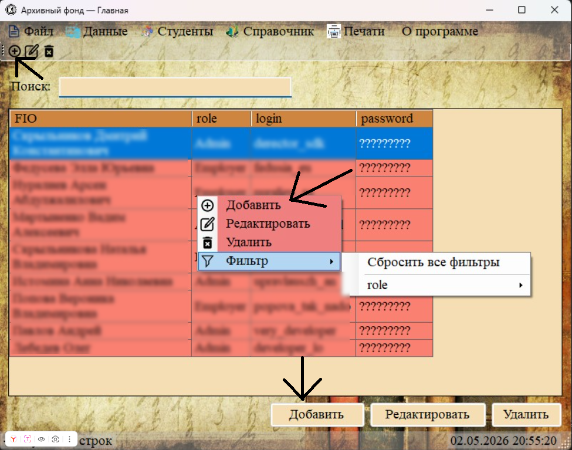
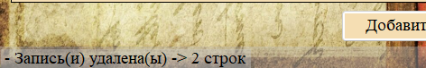

Для управления записями в любом разделе программы предусмотрены три основных действия: Добавление, Редактирование и Удаление. Выполнить их можно тремя способами:
— через панель инструментов (иконки вверху);
— через контекстное меню (правый клик по таблице);
— через кнопки в нижней части окна.

Рис. 1. Три способа выполнения операций: панель инструментов, контекстное меню, нижние кнопки
1. Добавление новой записи

Для добавления новой записи:
1. Убедитесь, что вы находитесь в нужном разделе (отображается таблица).
2. Нажмите кнопку «Добавить» (иконка с плюсом).
3. Заполните открывшуюся форму (поля, обязательные для заполнения, отмечены звёздочкой *).
4. Нажмите кнопку «Принять» для сохранения или «Отмена» для отмены.
2. Редактирование записи

Рис. 3. Выделите строку с нужной записью (одиночный клик)
Для редактирования существующей записи:
1. Выделите строку с нужной записью в таблице.
2. Нажмите кнопку «Редактировать» (иконка с карандашом).
3. В открывшейся форме измените нужные поля.
4. Нажмите «Принять» для сохранения или «Отмена» для отмены.

Рис. 4. Пример формы редактирования записи (заголовок «Изменение документа»)
Важно: Редактирование доступно только при выделении одной строки. Если выделено несколько строк, кнопка «Редактировать» становится неактивной.
3. Удаление записи

Рис. 5. Выделите одну или несколько строк для удаления
Для удаления записи:
1. Выделите одну или несколько строк с нужными записями.
2. Нажмите кнопку «Удалить» (иконка с крестиком).
3. Подтвердите удаление в появившемся диалоговом окне.
Особенности удаления:
— Можно удалять как одну, так и несколько записей одновременно.
— При удалении записи также удаляются связанные с ней данные (например, при удалении студента удаляются его личное дело и документы).
— Некоторые записи защищены от удаления (например, системный администратор с логином «Admin»).

Рис. 7. Сообщение в статусной строке о результате удаления
Статусная строка и подтверждение операций
После выполнения любой операции (добавления, редактирования или удаления) в статусной строке (внизу окна) появляется сообщение:
— «Запись добавлена» — после успешного добавления.
— «Запись обновлена» — после успешного редактирования.
— «Запись(и) удалена(ы) -> X строк» — после успешного удаления (где X — количество удалённых строк).
— Если при добавлении или редактировании не заполнены обязательные поля (отмеченные звёздочкой *), программа покажет предупреждение и не позволит сохранить запись.
— При возникновении ошибки базы данных (например, дублирование уникального поля или нарушение внешнего ключа) появится сообщение «Ошибка записи данных!». Подробнее — в разделе 4.2.2.